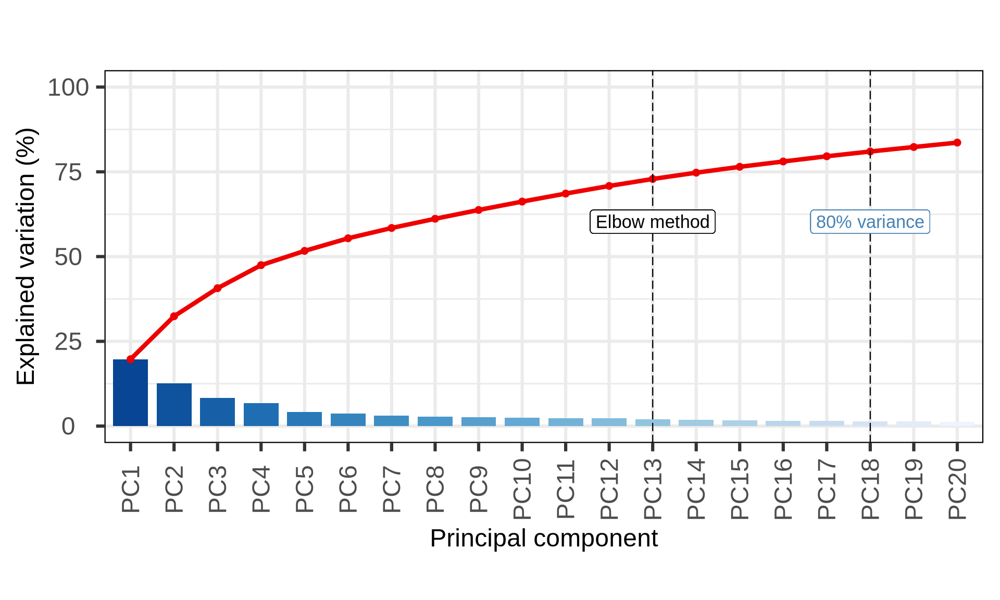
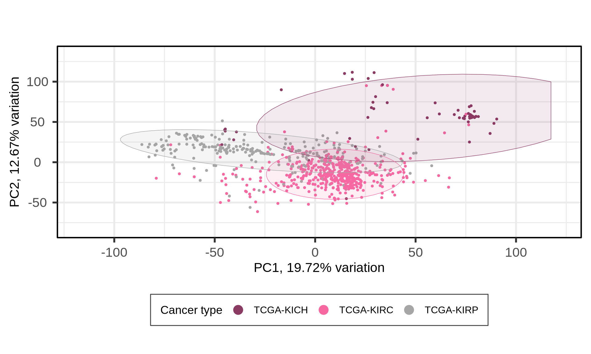

5 Genomics and Epigenomics Analysis
5.1 CNVs
Import CNVs
5.1.1 filtering & QC
CNVs collapsed at the gene level available for 24776 genes
How many are all zeros??
not a single one with all zeros :/
cutoff density = 5 because overwelming abundances of 0s
There is obviously erinchment in CNVs in KICH when compared to KIRC and KIRP. KIRP has as well an higher number of CNVs than KIRP.

5.1.1.1 CNVs signatures across Kidney cancers
Followed guidelines and methodlogies explored by Alexandrov et al., 2022 and Steele et al., 2022
We generates novel signatures with SigProfiler
Need to reformat as::
The CNV signatures you have will be binned based on copy number and segment size. It looks like the data you have is in the format:
<Copy Number>:<Label>:<Segment Size>
Copy number = The number of alleles in the CNV
Label = Name for the copy number event:
Homdel = Homozygous deletion. This is CNA=0
LOH = Loss of heterozygousity. One of the parental alleles has been lost.
Het = Heterzygous. Both parental alleles are present.
Segment size = Size of the CNA segment.Hope that helps!
map CNVs on the genome
TODO:
- add genomic ranges to genes
- merge consecutive genes spans with same CNV
- plot them on CIRCOs
<Copy Number>:<Label>:<Segment Size>
Copy number = The number of alleles in the CNV
Label = Name for the copy number event:
Homdel = Homozygous deletion. This is CNA=0
LOH = Loss of heterozygousity. One of the parental alleles has been lost.
Het = Heterzygous. Both parental alleles are present.
Segment size = Size of the CNA segment.5.1.2 PCA

The first 24 Principal Components capture more than 80% of the variance in the Kidney cancers transcriptomics dataset, with the first two components (PC1 and PC2) capturing a bit more than 25% of the variance.
When we project the samples in the PC1 and PC2, we can see that the PC1 separates KIRC from KICH adn KIRP, which instead cluster together. The second component PC2, instead, seems to partially separate KICH and KIRP samples.

We can also investigate other dimensions Principal Components, to see if there is a component that manages to fully resove the three cancer types. PC4 seems to separates better the KICH from KIRP, while PC1 can discriminate between KIRC and KIRP.

5.1.3 Differential CNVs analysis
In addition to cancer type, we saw that age, ethnicity (and race) and age had somewhat a correlation with the cancer types.
We may want to include this covariates in the differential gene expression analysis in order to include their contribution into the model.
print(summary(dt)) KIRC_vs_KICH KIRP_vs_KICH KIRC_vs_KIRP Down 8469 6549 13460 NotSig 5606 4912 6268 Up 10701 13315 5048
5.1.4 Identification of differentially expressed genes


5.1.4.1 ENRICHMENT GENES FOR KICH CNVs
5.2 variants
5.3 epigenomics
646 samples with methylation info